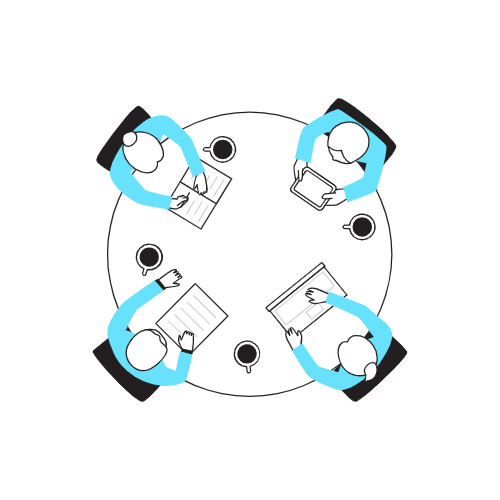

Trabajo en equipo!
El trabajo en equipo, entendido como el “grupo de personas que a través de una relación interdependiente, planifican y ejecutan acciones coordinadas para el logro de objetivos, en una realidad compleja”, es una de las habilidades más importantes para el desarrollo de proyectos, ya que potencia las capacidades humanas individuales buscando las metas de ese equipo. Para ello es necesario que los integrantes se sientan comprometidos, creativos, responsables y que haya un clima de armonía y espíritu superador. Es fundamental que en el equipo haya líderes, que se encarguen de aunar criterios, coordinar las actividades, reducir y resolver los conflictos y asegurarse de que todos caminen en la misma dirección.

Características del trabajo en equipo:
- 1. Objetivos claros y bien definidos, Es imprescindible que los integrantes del equipo conozcan cuál es el objetivo que se desea alcanzar y en qué plazo (si lo hay) ya que de esta manera los esfuerzos serán productivos y conducirán al éxito del grupo.
- 2. Sentido de pertenencia Para trabajar en equipo es necesario generar una identidad común. El sentimiento de pertenencia es identitario del ser humano ya que facilita que los valores y la visión sean compartidos.
- 3. Se enriquece con la diversidad En un equipo pueden convivir personas muy diversas y complementarias, lo imprescindible es clarificar un objetivo común, que permita el desarrollo del potencial de cada uno de los individuos que lo conforman